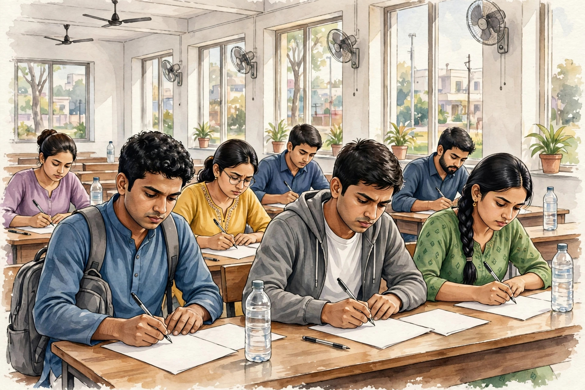

সরকারি চাকরির অগ্রিম আপডেট: আসন্ন নিয়োগ ২০২৬

সরকারি চাকরির প্রস্তুতি নিচ্ছেন? তাহলে এই খবর আপনার জন্য! পশ্চিমবঙ্গ পাবলিক সার্ভিস কমিশন (WBPSC)-এর দুটি বড় নিয়োগে এখন আবেদন চলছে, আর রাজ্যের ৫৪টি দফতরে ধাপে ধাপে বড় নিয়োগের পরিকল্পনার খবরও এসেছে। সব তথ্য যাচাই করে নিচে দিলাম।
🎯 এক নজরে: English Stenographer — ২৬৬ পদ (শেষ তারিখ ৭ নভেম্বর ২০২৬) · Sub-Surveyor — ১,১৪৫ পদ (শেষ তারিখ ৯ নভেম্বর ২০২৬)। দুটোতেই আবেদন শুধু অনলাইনে।
1️⃣ WBPSC English Stenographer — ২৬৬ পদ
- পদ: English Stenographer (Basic Grade), Schedule A ও B
- বিজ্ঞপ্তি নম্বর: 04/2025
- শূন্যপদ: ২৬৬ (Schedule A: ১৪৬, Schedule B: ১২০)
- যোগ্যতা: মাধ্যমিক পাশ + ইংরেজি টাইপিং গতি মিনিটে ৩০ শব্দ + কম্পিউটারের প্রাথমিক জ্ঞান
- বয়স: ১৮–৪৪ বছর (সংরক্ষিত শ্রেণির ছাড় প্রযোজ্য)
- বেতন: Pay Level-9, ₹২৮,৯০০ – ₹৭৪,৫০০
- আবেদন: ১৮ অক্টোবর – ৭ নভেম্বর ২০২৬ (বিকেল ৩:৩০ পর্যন্ত)
- ফি: ₹১৬০ (WB-র SC/ST ও PwBD প্রার্থীদের ছাড়)
- পরীক্ষা: সম্ভাব্য ডিসেম্বর ২০২৬, কলকাতায়
2️⃣ WBPSC Sub-Surveyor — ১,১৪৫ পদ
- পদ: Sub-Surveyor, ভূমি রেকর্ড ও জরিপ অধিদপ্তর (ভূমি ও ভূমি সংস্কার দপ্তর)
- বিজ্ঞপ্তি নম্বর: 22/2024
- শূন্যপদ: ১,১৪৫ (স্থায়ী পদ)
- যোগ্যতা: মাধ্যমিক পাশ + সার্ভে ইঞ্জিনিয়ারিংয়ে ৩ বছরের ডিপ্লোমা অথবা ২ বছরের ITI সার্ভেয়ার সার্টিফিকেট + ১ বছরের অভিজ্ঞতা
- বাংলা জানা আবশ্যক (মাতৃভাষা নেপালি হলে ছাড়)
- বেতন: Pay Level-7, ₹২৪,৭০০ – ₹৬৩,৯০০
- আবেদন: ২০ অক্টোবর – ৯ নভেম্বর ২০২৬ (বিকেল ৩টা পর্যন্ত)
- ফি: ₹১১০ (সংরক্ষিত শ্রেণির ছাড় প্রযোজ্য)
3️⃣ ৫৪ দফতরে বড় নিয়োগের পরিকল্পনা
প্রকাশিত প্রতিবেদন অনুযায়ী, রাজ্য সরকারের ৫৪টি দফতরের শূন্যপদ পূরণে ধাপে ধাপে বড় নিয়োগের পরিকল্পনা নেওয়া হয়েছে — অক্টোবর ২০২৬ থেকে মার্চ ২০২৭-এর মধ্যে। কিছু প্রতিবেদনে মোট পদের সংখ্যা প্রায় ১.৫১ লক্ষ বলা হলেও, এটি এখনো পরিকল্পনা পর্যায়ে — দফতরভিত্তিক আলাদা বিজ্ঞপ্তি বেরোলে তবেই আবেদন করা যাবে।
⚠️ মনে রাখুন: "দেড় লক্ষ পদ" নিয়ে অনেক ভুয়ো পোস্ট ঘুরছে। কোনো দফতরের আলাদা বিজ্ঞপ্তি না বেরোনো পর্যন্ত আবেদন করা যায় না। অফিসিয়াল বিজ্ঞপ্তির জন্য অপেক্ষা করুন।
4️⃣ কেন্দ্রীয় চাকরির আপডেট
- SSC CGL 2026: Tier-I পরীক্ষা চলছে (৩০ সেপ্টেম্বর – ৩০ অক্টোবর ২০২৬)। যাঁরা আবেদন করেছেন, অ্যাডমিট কার্ড যাচাই করে রাখুন।
- RRB Nursing Superintendent: ৩৬৫ পদের বিজ্ঞপ্তি প্রকাশিত হয়েছিল (সেপ্টেম্বর ২০২৬)। নার্সিং যোগ্যতাধারীরা অফিসিয়াল RRB বিজ্ঞপ্তি দেখে নিন।
📝 আবেদন করবেন কোথায়?
সরকারি ওয়েবসাইট (শুধু এখান থেকেই ফর্ম ফিলাপ করুন):
- WBPSC: psc.wb.gov.in
- SSC: ssc.gov.in
- UPSC: upsc.gov.in
- রেলওয়ে: indianrailways.gov.in
🚨 প্রতারণা থেকে সাবধান!
- সরকারি চাকরির নামে কেউ টাকা চাইলে দেবেন না — এটা ১০০% প্রতারণা।
- WhatsApp/Telegram-এ আসা "নিশ্চিত চাকরি" মেসেজে ক্লিক করবেন না।
- আবেদনের আগে মূল বিজ্ঞপ্তির PDF নিজে পড়ুন।
🔗 আরও আপডেট পেতে যুক্ত থাকুন
🌐 ওয়েবসাইট: আরও নতুন নতুন তথ্যের জন্য আমাদের ওয়েবসাইট ভিজিট করুন: https://aicombo90.github.io/dafadar-online-seva/ — ওয়েবসাইটটা মোবাইলে সেভ/বুকমার্ক করে রাখুন যাতে হারিয়ে না যায়! পরের বার এলে নতুন তথ্য দেখতে পাবেন।
💬 WhatsApp গ্রুপ: সরকারি প্রকল্প ও চাকরির তাজা আপডেট সবার আগে পেতে আমাদের WhatsApp গ্রুপে যোগ দিন: গ্রুপে যোগ দিন
📺 YouTube: ভিডিওতে দেখতে চান? আমাদের YouTube চ্যানেল সাবস্ক্রাইব করুন: Dafadar Online Seva